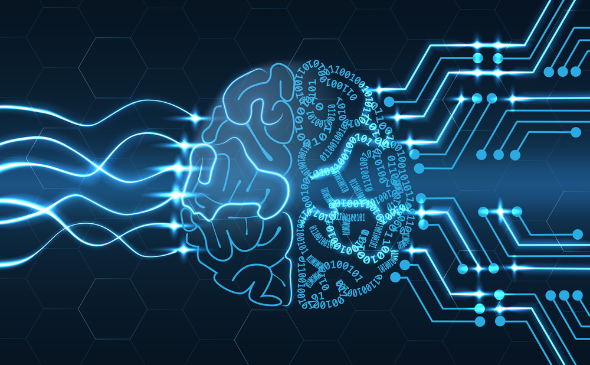

Deep Learning

Deep Learning
Deep learning (also known as deep structured learning or hierarchical learning) is part of a broader family of machine learning methods based on learning data representations, as opposed to task-specific algorithms. Learning can be supervised, semi-supervised or unsupervised.
Deep learning architectures such as deep neural networks, deep belief networks and recurrent neural networks have been applied to fields including computer vision, speech recognition, natural language processing, audio recognition, social network filtering, machine translation, bioinformatics, drug design, medical image analysis, material inspection and board game programs, where they have produced results comparable to and in some cases superior to human experts.
Deep learning models are vaguely inspired by information processing and communication patterns in biological nervous systems yet have various differences from the structural and functional properties of biological brains (especially human brains), which make them incompatible with neuroscience evidences.
Definition
Deep learning is a class of machine learning algorithms that:
1.use a cascade of multiple layers of nonlinear processing units for feature extraction and transformation. Each successive layer uses the output from the previous layer as input.
2.learn in supervised (e.g., classification) and/or unsupervised (e.g., pattern analysis) manners.
3.learn multiple levels of representations that correspond to different levels of abstraction; the levels form a hierarchy of concepts.
Automatic speech recognition
Large-Scale automatic speech recognizing is the first and most convincing successful case of deep learning. LSTM RNNs can learn "Very Deep Learning" tasks that involve multi-second intervals containing speech events separated by thousands of discrete time steps, where one time step corresponds to about 10 ms. LSTM with forget gates is competitive with traditional speech recognizers on certain tasks.
The initial success in speech recognition was based on small-scale recognition tasks based on TIMIT. The data set contains 630 speakers from eight major dialects of American English, where each speaker reads 10 sentences. Its small size lets many configurations be tried. More importantly, the TIMIT task concerns phone-sequence recognition, which, unlike word-sequence recognition, allows weak phone bigram language models. This lets the strength of the acoustic modeling aspects of speech recognition be more easily analyzed. The error rates listed below, including these early results and measured as percent phone error rates (PER), have been summarized since 1991.
Image Recognition
A common evaluation set for image classification is the MNIST database data set. MNIST is composed of handwritten digits and includes 60,000 training examples and 10,000 test examples. As with TIMIT, its small size lets users test multiple configurations. A comprehensive list of results on this set is available.
Deep learning-based image recognition has become "superhuman", producing more accurate results than human contestants. This first occurred in 2011.
Deep learning-trained vehicles now interpret 360° camera views. Another example is Facial Dysmorphology Novel Analysis (FDNA) used to analyze cases of human malformation connected to a large database of genetic syndromes.
Visual Art Processing
Closely related to the progress that has been made in image recognition is the increasing application of deep learning techniques to various visual art tasks. DNNs have proven themselves capable, for example, of a) identifying the style period of a given painting, b) "capturing" the style of a given painting and applying it in a visually pleasing manner to an arbitrary photograph, and c) generating striking imagery based on random visual input fields.
Natural Language Processing
Neural networks have been used for implementing language models since the early 2000s. LSTM helped to improve machine translation and language modeling.
Other key techniques in this field are negative sampling and word embedding. Word embedding, such as word2vec, can be thought of as a representational layer in a deep learning architecture that transforms an atomic word into a positional representation of the word relative to other words in the dataset; the position is represented as a point in a vector space. Using word embedding as an RNN input layer allows the network to parse sentences and phrases using an effective compositional vector grammar. A compositional vector grammar can be thought of as probabilistic context free grammar (PCFG) implemented by an RNN. Recursive auto-encoders built atop word embeddings can assess sentence similarity and detect paraphrasing. Deep neural architectures provide the best results for constituency parsing,sentiment analysis, information retrieval, spoken language understanding, machine translation, contextual entity linking, writing style recognition, Text classification and others.
Recent developments generalize word embedding to sentence embedding.Google Translate (GT) uses a large end-to-end long short-term memory network. Google Neural Machine Translation (GNMT) uses an example-based machine translation method in which the system "learns from millions of examples." It translates "whole sentences at a time, rather than pieces. Google Translate supports over one hundred languages. The network encodes the "semantics of the sentence rather than simply memorizing phrase-to-phrase translations". GT uses English as an intermediate between most language pairs.